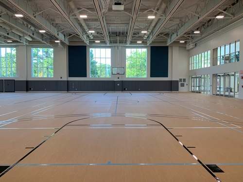
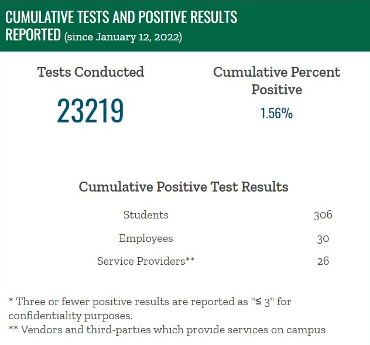

Problem 1: Scheduling |
|||
|  |
When looking at the promotional material sent out during the construction and fundraising of the Brac you will see a common theme. This theme is an emphasis on improving the student experience at Babson through a common recreational space. The problem is students are treated as a second class when it comes to scheduling. Prime time slots for students like 6-9 on weekdays are sold off to outside sports teams. For students who have class and work throughout the day, this is the only available time but they can’t even use what was intended for them. When students complained the response was well these teams pay well. | ||
Problem 2: Community Saftey | |||
|
Not only is the Brac not caring for their intended audience, but they are also putting their students at risk. During the Peak of the Onimcoron infections when infection rates were highest the Brac was full of outsiders. While students were required to test a minimum of once a week players and parents of unknown health status were allowed to take over a high traffic part of campus. As you can see in the image the Babson students were at low risk of infection from other students but the these outside athletes increase the potential for covid to be introduced in to our bubble. By selling out Brac the administration endangered students and likely caused some of them to get covid. |  | ||